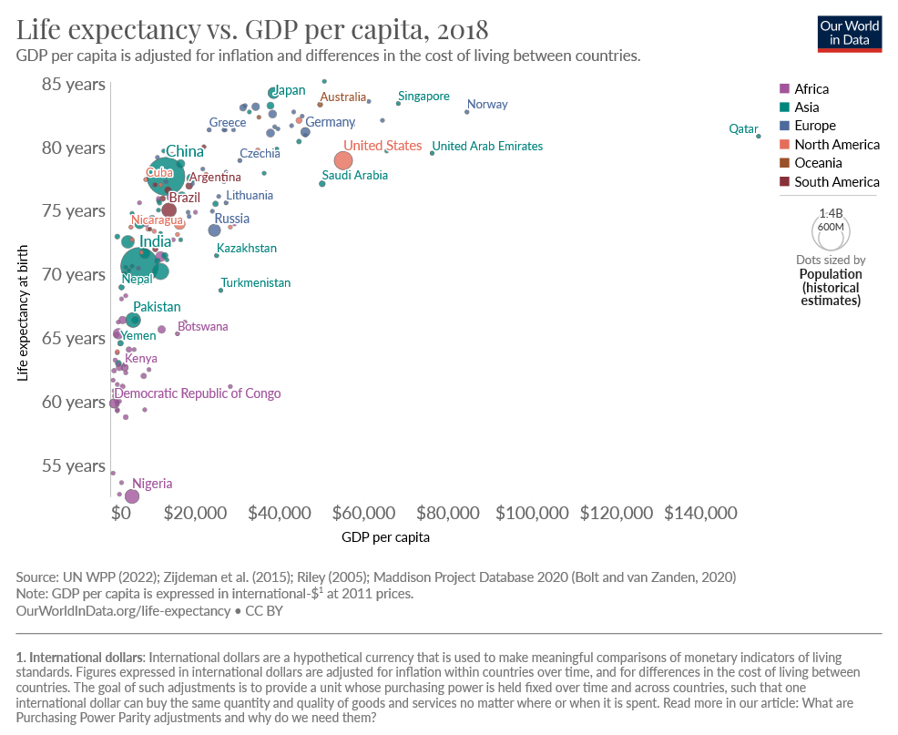
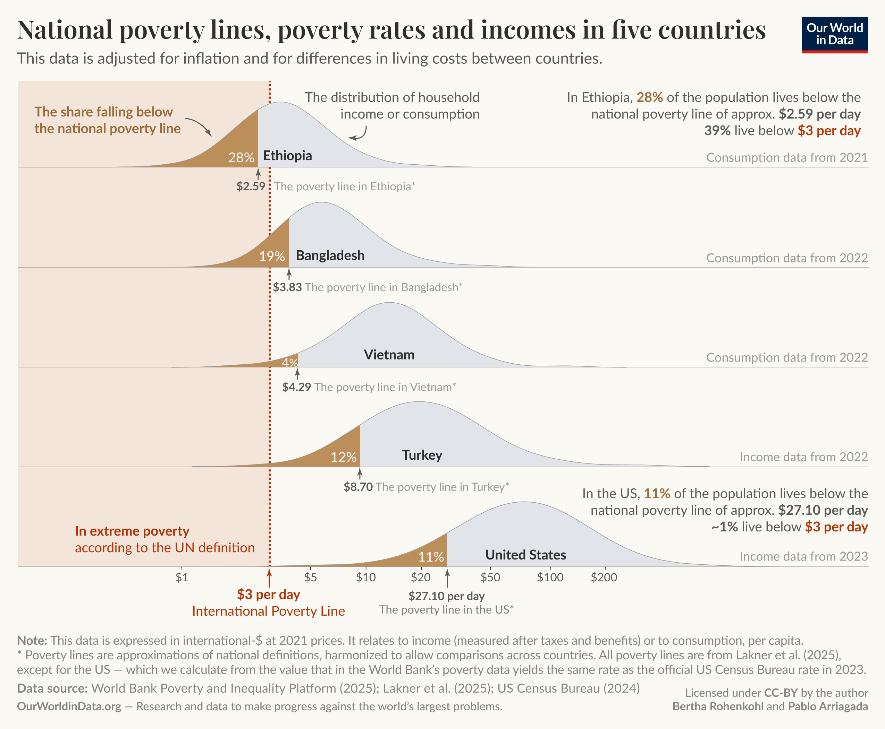
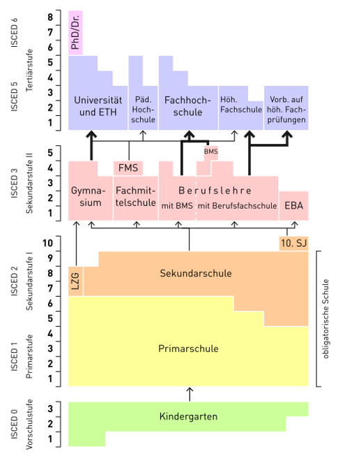
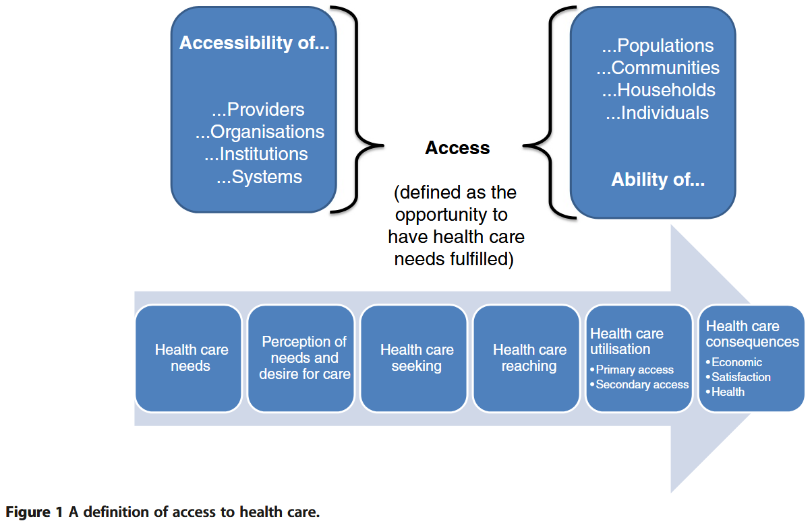
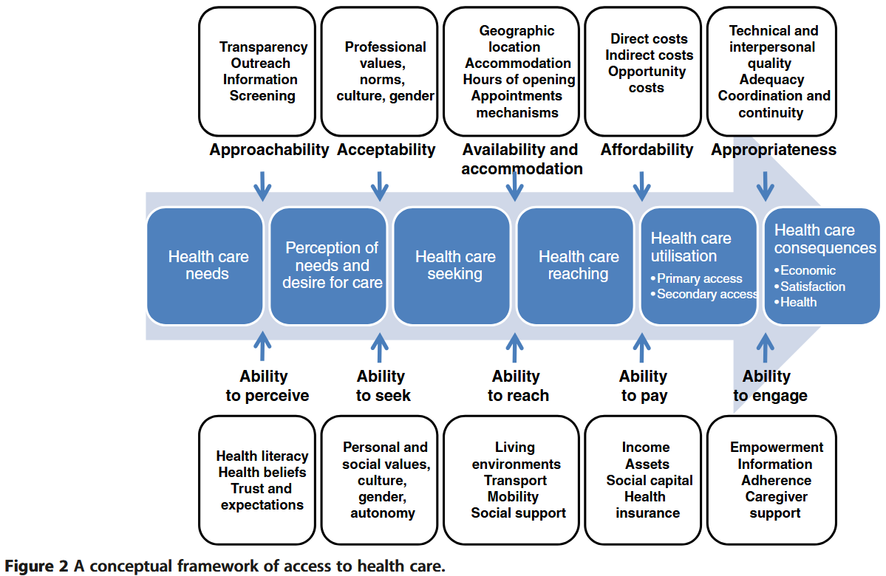
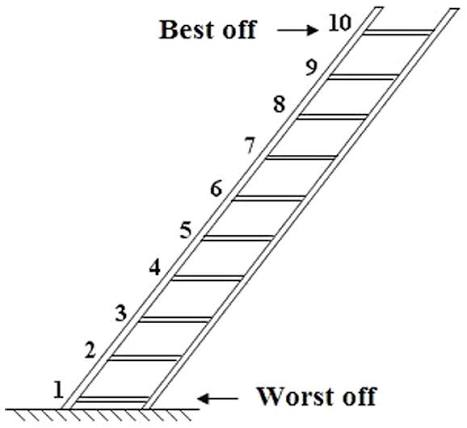

6. Socioeconomic inequalities and health care access
29 October 2026
Today we examine income, social status, education and occupation as dimensions of socioeconomic position, before turning to inequalities in health care access and affordability.
The session includes a guest talk by Prof. Dr. Christian Schmid, Head of the CSS Institute, on health care affordability and premium subsidies.
Recap: what explains health inequalities?
In Week 5, we distinguished three pathways through which socioeconomic disadvantage can affect health.
| Pathway | What varies socially? | Example |
|---|---|---|
| Behavioural | Health-related practices | Smoking |
| Material | Resources and physical exposures | Income, housing and working conditions |
| Psychosocial | Stress, control and social relationships | Job strain and insecurity |
We also examined health selection: poor health can reduce employment opportunities and income.
Fundamental and structural explanations ask why resources, opportunities and health risks are unequally distributed in the first place (McCartney et al. 2013).
A person postpones a medical consultation because they cannot afford it.
How does this example connect material circumstances, health system arrangements and health selection?
Limited income creates a material barrier. Insurance arrangements, treatment charges and public support shape the size of that barrier.
If postponed treatment worsens health and reduces the person’s ability to work, poor health may subsequently deepen economic disadvantage.
Today we ask how socioeconomic position should be measured and how it relates to access to health care.
Learning objectives
By the end of this session, you should be able to:
- distinguish income, social status, education and occupation as dimensions of socioeconomic position;
- explain why the choice of socioeconomic indicator affects observed health inequalities;
- explain Levesque et al.’s distinction between the accessibility of services and the abilities of populations;
- distinguish health care access, use, unmet need and financial hardship; and
- identify suitable ISSP or ESS measures for an analysis of socioeconomic inequalities in health or health care access.
Required readings
Galobardes, B., Lynch, J., & Davey Smith, G. (2007). Measuring socioeconomic position in health research. British Medical Bulletin, 81–82(1), 21–37. https://doi.org/10.1093/bmb/ldm001
Thomson, S., et al. (2024). Monitoring progress towards universal health coverage in Europe: A descriptive analysis of financial protection in 40 countries. The Lancet Regional Health – Europe, 37, 100826. https://doi.org/10.1016/j.lanepe.2023.100826
Framework used in class: Levesque, J.-F., Harris, M. F., & Russell, G. (2013). Patient-centred access to health care: Conceptualising access at the interface of health systems and populations. International Journal for Equity in Health, 12, 18. https://doi.org/10.1186/1475-9276-12-18
Part 1 — Socioeconomic position: a multidimensional concept
Socioeconomic status (SES) encompasses not only income but also educational attainment, occupational prestige, and subjective perceptions of social status and social class. It includes quality-of-life attributes and the opportunities afforded to people within society, and consistently predicts a wide range of psychological outcomes.
Adapted from the APA Dictionary of Psychology.
Socioeconomic status (SES) is considered to be a “fundamental cause” of health inequalities.
This framework was established by Bruce G. Link and Jo C. Phelan in their seminal 1995 paper, “Social Conditions as Fundamental Causes of Disease” (Journal of Health and Social Behavior) (Link and Phelan 1995).
Link and Phelan proposed Fundamental Cause Theory (FCT) to solve a major sociological puzzle: Why does the relationship between SES and health persist over time, even when the primary diseases, environmental hazards, and medical treatments change completely?
According to Link and Phelan, a social condition like SES is a fundamental cause because it satisfies four essential criteria:
Influences multiple disease outcomes: It is not tied to a single illness; lower SES is associated with higher rates of cardiovascular disease, diabetes, infectious diseases, injuries, and premature overall mortality.
Affects disease outcomes through multiple risk factors: SES dictates exposure to a wide range of risk and protective factors (e.g., nutrition, housing conditions, occupational hazards, stress levels, and smoking rates).
Involves access to flexible resources: High-SES individuals possess adaptable resources—specifically money, knowledge, prestige, power, and beneficial social connections—that can be deployed to avoid health risks and adopt protective strategies, regardless of the historical context or specific disease threat.
Reproduces the health gradient over time: As older mechanisms linking SES to disease are eradicated (e.g., sanitation improvements, vaccines for infectious diseases), high-SES groups are faster to adopt new health-protective knowledge and interventions (e.g., smoking cessation, advanced screening, targeted therapeutics), continually regenerating the health inequality gap.
Hence, they define a fundamental cause as follows:
“[A] fundamental social cause of disease involves resources that determine the extent to which people are able to avoid risks for morbidity and mortality. Because resources are important determinants of risk factors, fundamental causes are linked to multiple disease outcomes through multiple risk-factor mechanisms. Moreover, because social and economic resources can be used in different ways in different situations, fundamental social causes have effects on disease even when the profile of risk factors changes radically. It follows that the effect of a fundamental cause cannot be explained by the risk factors that happen to link it to disease at any given time.” (Link and Phelan 1995, 88)
And they argue why they see SES as a fundamental cause:
“[W]e argue that social factors such as socioeconomic status and social support are likely”fundamental causes” of disease that, because they embody access to important resources, affect multiple disease outcomes through multiple mechanisms, and consequently maintain an association with disease even when intervening mechanisms change.” (Link and Phelan 1995, 80)
This connects to Week 5’s distinction between particular pathways and the “causes of the causes”.
The APA uses the term socioeconomic status (SES). Following Galobardes et al. (2007), we use socioeconomic position (SEP) as the broader organising concept for this session. Both direct attention to several dimensions of social advantage rather than income alone.
We can distinguish several dimensions:
- Income (money, material well-being, opportunities for consumption and saving);
- Social status (social prestige and recognition, subjective social position);
- Education;
- Occupation (occupational prestige, earnings security, job security and autonomy).
These dimensions overlap, but they are not interchangeable.
Galobardes et al. (2007) argue that using different socioeconomic indicators can reveal variation in health inequalities and help identify the mechanisms involved. Indicators also capture circumstances at different stages of the life course.
There is no single socioeconomic indicator that is best for every research question.
Choose an indicator because of what it measures and how it relates to the proposed mechanism.
1. Income
Income provides material resources and opportunities for consumption and saving. It enables people to meet basic needs, including food, housing, heating and health care.
Distinguish two perspectives:
- Absolute income: the amount of resources available. Health benefits may be particularly substantial when additional income helps meet basic needs, with diminishing gains at higher incomes.
- Relative income: where someone stands compared with others. Relative disadvantage may affect health through social comparison, perceived status, stress and reduced control.
- “Relative deprivation (RD) is the judgment that one is worse off compared to some standard accompanied by feelings of anger and resentment.” (Smith et al. 2011; Runciman 1966)


3. Education
Education provides qualifications, knowledge and skills. It shapes employment opportunities and access to economic resources, while potentially supporting health literacy and the ability to understand and use health information.
Educational attainment also reflects earlier-life opportunities. Its social meaning depends on the educational system and generation: the same qualification can confer different advantages across contexts.
Education systems are often classified with ISCED, the International Standard Classification of Education, developed by UNESCO.


4. Occupation
Occupation captures a person’s position in the organisation of work, including occupational prestige, earnings security, job security and autonomy. Occupations also differ in physical hazards and psychological demands.
Occupations are commonly coded using the International Standard Classification of Occupations (ISCO). ISCO groups jobs according to their tasks and skill requirements. These codes classify occupations rather than placing them on a single scale of socioeconomic advantage.
ISCO codes can be translated into theory-based occupational class or group schemes, such as:
- Erikson–Goldthorpe class scheme (Erikson and Goldthorpe 1992; Erikson et al. 1979)
- European Socio-economic Classification (ESeC) (Rose et al. 2010)
- Oesch class scheme (Oesch 2006)
These schemes capture different aspects of social stratification, including employment relationships and work organisation. Their construction may require additional information, such as employment status, supervisory responsibilities or establishment size.
Example: European Socio-economic Classification (ESeC)
| Class | Occupational group |
|---|---|
| 1 | Large employers and higher professionals and managers |
| 2 | Lower professionals and managers; higher technicians and supervisors |
| 3 | Intermediate occupations |
| 4 | Small employers and self-employed outside agriculture |
| 5 | Self-employed in agriculture |
| 6 | Lower supervisors and technicians |
| 7 | Lower service, sales and clerical occupations |
| 8 | Lower technical occupations |
| 9 | Routine occupations |
An additional category (10) identifies people who have never worked or are long-term unemployed.
Source: ESeC User Guide, following Rose and Harrison (2010).
- R:
DigClasspackage. - Stata:
iscogenpackage. - See also Daniel Oesch’s website for classification scripts.
We have distinguished several dimensions of socioeconomic position. We now examine how these relate to health care access: do people with different incomes, education and occupations have the same opportunities to obtain care when they need it?
Part 2 — Access to health care

Levesque et al. (2013, fig. 1) define access as a process: the opportunity to identify health care needs, seek services, reach them, obtain or use care, and have the need for care fulfilled.
They place access at the interface between:
- the accessibility of providers, organisations, institutions and systems; and
- the abilities of individuals, households, communities and populations.
A person may reach a doctor but still encounter barriers to diagnosis, referral, treatment or follow-up.
Levesque et al. therefore include the opportunity to obtain appropriate care and benefit from it.
Levesque et al. (2013, fig. 2) then distinguishe five dimensions of service accessibility and five corresponding population abilities.

| Accessibility of services | Corresponding population ability | Central question |
|---|---|---|
| Approachability | Ability to perceive | Can people identify a need and recognise that relevant services exist? |
| Acceptability | Ability to seek | Can people decide to seek care that they consider acceptable? |
| Availability and accommodation | Ability to reach | Can people reach an appropriate service at a suitable time? |
| Affordability | Ability to pay | Can people bear the costs of obtaining care? |
| Appropriateness | Ability to engage | Does care meet people’s needs and enable their involvement? |
1. Approachability and ability to perceive
Approachability concerns whether people can identify that services exist, can be reached and may help them.
Relevant service characteristics include transparency, information, outreach and screening.
The corresponding ability to perceive depends on health literacy, health beliefs, trust and expectations.
Example: Screening is available, but information does not reach some groups or is difficult to understand.
2. Acceptability and ability to seek
Acceptability concerns social and cultural features of services, including professional norms, values and the characteristics of providers.
The ability to seek concerns autonomy, knowledge of options and the capacity to express a decision to obtain care.
Example: Someone avoids seeking care because they anticipate disrespect or discrimination.
3. Availability and accommodation, and ability to reach
Availability and accommodation concern whether services exist in sufficient capacity and can be reached physically and in a timely manner.
Relevant features include location, opening hours, appointment arrangements and building accessibility.
The ability to reach depends on mobility, transport, living circumstances and social support.
Example: A clinic exists nearby, but its opening hours conflict with a worker’s inflexible shifts.
4. Affordability and ability to pay
Affordability concerns the resources and time required to obtain appropriate services.
Levesque et al. distinguish:
- direct costs, such as treatment charges;
- indirect costs, such as travel expenses; and
- opportunity costs, such as lost earnings.
The ability to pay depends on income, assets, social capital and health insurance.
Example: Someone can pay for the consultation but cannot afford the combined treatment costs, transport and time away from work.
5. Appropriateness and ability to engage
Appropriateness concerns the fit between services and people’s needs, including timeliness, technical and interpersonal quality, coordination and continuity.
The ability to engage concerns participation in decisions and treatment. Relevant factors include information, empowerment and support from caregivers.
Example: A patient obtains treatment but receives instructions they cannot understand and no support for follow-up.
The five pairs organise the framework, but they are not independent compartments.
A distant service can create both transport difficulties and financial costs. Poor communication can affect the recognition of need, trust and engagement.
Barriers may accumulate throughout the care process.
Discussion: where do we expect the largest inequalities?
In which of the five dimensions do you expect the largest socioeconomic inequalities?
Choose one dimension and identify:
- A service characteristic.
- A corresponding population ability.
- A policy that could improve their fit.
Examples include:
- Approachability: accessible information and outreach alongside support for health literacy.
- Availability and accommodation: appointment arrangements that accommodate people with inflexible working hours.
- Affordability: lower charges or stronger financial protection for households with limited resources.
- Appropriateness: clear communication, coordinated care and support for participation in treatment.
The framework directs attention to how services respond to people’s circumstances. It should not be interpreted as attributing access problems solely to individual deficits.
Affordability is one dimension of health care access. We examine it in more detail because the same costs can create different barriers depending on a household’s resources.
Financial protection: hardship and unmet need
Thomson et al. (2024) examine whether people can obtain needed health care without compromising their ability to meet other basic needs.
Their analysis brings together two outcomes:
- Financial hardship: people use health services, but out-of-pocket payments impoverish them or absorb a substantial share of their available resources.
- Unmet need: people forgo needed care because of financial or other barriers.
These outcomes must be examined together. Low health spending does not necessarily indicate good financial protection: people may spend little because they cannot afford treatment.
Key findings from Thomson et al. (2024) relevant to our session:
Financial hardship is concentrated among poorer households.
Outpatient medicines are a particularly important source of hardship for these households.
Dental care illustrates why expenditure and unmet need can show different patterns: poorer people may forgo services that better-off people obtain and pay for.
The policy question therefore extends beyond whether people are insured. It concerns who is entitled to care, which services are covered, and which payments patients must make.
The guest talk by Prof. Dr. Christian Schmid, Head of the CSS Institute, examines this relationship in Switzerland, focusing on health care affordability and premium subsidies.
Applied part: SES and health care access in ESS and ISSP
The ESS and ISSP provide measures of socioeconomic position, health care use and reported barriers to obtaining care. Their coverage differs: some concepts have direct measures, while others can only be approximated.
The overview below refers to ESS Rounds 7 and 11 and the ISSP Health and Health Care modules from 2011 and 2021. Check the documentation for the selected release before combining countries or waves.
1. Socioeconomic position
| Indicator | ESS | ISSP |
|---|---|---|
| Educational attainment | eisced: harmonised educational level; country-specific qualifications also available |
ISCED, EDULEVEL: harmonised educational level; country-specific qualifications also available |
| Years of education | eduyrs |
EDUCYRS |
| Household income | hinctnta: household income decile within the national distribution |
Country-specific household-income variables (AT_INC, CH_INC, etc.) |
| Personal income | No equivalent standard measure in this overview | Country-specific personal-income variables (AT_RINC, CH_RINC, etc.) |
| Subjective income situation | hincfel: feelings about household income nowadays |
No directly equivalent standard background item |
| Occupation | isco08: ISCO-08 occupational code |
ISCO08: ISCO-08 occupational code |
| Employment circumstances | Variables on employment status, employment relations and supervisory responsibilities | Background variables on employment status, self-employment and supervisory responsibilities |
| Subjective social position | No equivalent standard top–bottom ladder in the core questionnaire | TOPBOT: subjective placement from the bottom to the top of society |
2. Health care access and use
| Concept | ESS | ISSP |
|---|---|---|
| Use of medical services | dshltgp and dshltms: discussion of health with a GP or specialist in the previous 12 months |
Questions on frequency of visits to or by a doctor |
| Use of specific treatments | trhltacu Acupuncture, trhltacp Acupressure, trhltcm Chinese medicine, trhltch Chiropractic, trhlt... etc. |
NA |
| Unmet need | medtrun: unable to obtain a needed medical consultation or treatment in the previous 12 months (1=yes, 2=no) |
Questions on not receiving needed treatment for specified reasons |
| Financial barrier | medtrnp: reason: could not pay |
Q20a in 2011; Q18a in 2021 |
| Work or other commitments | medtrnt: reason: could not take time off work; medtroc: other commitments |
Q20b in 2011; Q18b in 2021 |
| Waiting times | medtrwl: reason: waiting list too long; medtrnaa: reason: no appointments available |
Q20c in 2011; Q18c in 2021 |
| Geographical availability | medtrnl: reason: services not available where you live |
NA |
Documentation
What have we learned?
Income, subjective social position, education and occupation capture different dimensions of socioeconomic advantage.
Levesque et al. conceptualise access as the interaction between service accessibility and population abilities throughout the care process. Access extends from recognising a need to obtaining appropriate care and benefiting from it.
Affordability is one key dimension of access. Financial protection requires attention both to care people forgo and to the financial consequences of care they receive.
Outlook next week
- Horizontal health inequalities: gender, ethnicity, racialisation and migration status, and how they differ from socioeconomic position.
- Explanations: discrimination and structural racism, and their intersection with socioeconomic disadvantage.
- Empirical application: ESS/ISSP indicators of migration background and ethnic group membership; comparing health inequalities before and after accounting for socioeconomic position.
2. Social status
Following Max Weber, social status refers to the social honour, prestige or respect accorded to an individual or group. It is conceptually distinct from economic resources, although the two are related.
Subjective social position concerns where people believe they stand within society. This assessment may reflect income, education, occupation and perceived recognition.
Perceived disadvantage or lack of recognition may affect health through psychosocial pathways, including stress and reduced control.
